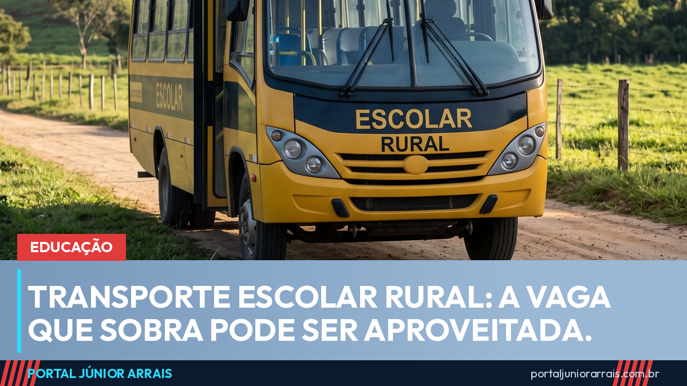

Transporte escolar rural: projeto libera vaga que sobra para professor e universitário

Quem mora na zona rural conhece bem a cena: o ônibus escolar passa de manhã e volta de tarde, muitas vezes com lugares vazios, enquanto o professor daquela mesma escola e o vizinho que faz faculdade na cidade precisam se virar por conta própria.
Um projeto na pauta do Plenário do Senado desta quarta-feira (2) quer resolver isso. O PL 743/2023, relatado pela senadora Jussara Lima (PSD-PI), autoriza que os assentos que sobram nos veículos do transporte escolar rural sejam aproveitados por outras pessoas.
Quem poderia usar a vaga
Pelo texto, poderiam ocupar os lugares ociosos:
- professores dos alunos atendidos por aquele transporte;
- estudantes da zona urbana;
- estudantes do ensino superior;
- estudantes da Rede Federal de Educação Profissional, Científica e Tecnológica.
A prioridade continua sendo do aluno do campo
O projeto não abre mão da regra principal, e isso está expresso no texto: a prioridade continua sendo dos alunos da educação básica pública que moram em áreas rurais. Só quando houver lugar disponível, e sem prejudicar esse atendimento, o veículo poderá levar as demais pessoas.
Ou seja, não se trata de dividir o ônibus com quem já tem direito ao lugar — e sim de aproveitar assento que hoje viaja vazio.
Por que isso pesa no bolso da família
Para a família do campo, o custo do deslocamento é um dos maiores obstáculos para o filho continuar estudando depois do ensino médio. Muita gente desiste da faculdade ou do curso técnico não por causa da mensalidade, mas por causa do transporte até a cidade. Aproveitar um assento que já está rodando pode ser a diferença entre continuar e parar de estudar.
Atenção ao que ainda falta
O projeto ainda não é lei. Ele está pautado para votação no Plenário do Senado, e o texto pode ser aprovado, alterado ou retirado de pauta. Enquanto isso não se resolve, valem as regras atuais, e nenhuma prefeitura está obrigada a liberar as vagas.
Se aparecer alguém na sua região cobrando para conseguir lugar no ônibus escolar ou vendendo cadastro para essa vaga, desconfie: transporte escolar público não se compra. Havendo dúvida sobre o direito ao transporte na sua situação, vale procurar um profissional de sua confiança para orientar.
Conteúdo informativo — não substitui orientação individualizada sobre o seu caso.